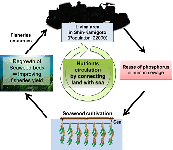

Toda Lab Project Soka University Faculty of Engineering
Projects
Laboratory of Restoration Ecology has been working on various collaborative projects on Aquatic Sciences with researchers inside and outside the nation. We also promote industry-academic-government joint research projects encouraged by various ministries, and attempt to develop organic waste and wastewater treatment process, which can be practically applied to the society.
The leading study among those collaborations is the research on the coastal ecosystem of Sagami Bay with the laboratory of Prof. Kikuchi at Faculty of Education and Human Sciences, Yokohama National University. This research has been in process for 20 years and achieved many results.
In terms of international collaborations, this lab has been working with Prof. Othman Ross at Universiti Kebangsaan Malaysia (UKM) for 15 years. We conducted three on-site environmental conservation research projects in the entire area of Malay Peninsula, and many graduate and undergraduate students were able to participate. We collected new observations that are expected to contribute to Marine Ecology of the tropical zone, and additional younger staff members have been further developing the research. We would like to express my appreciation for Japan Society for the Promotion of Science (JSPS) for enabling us to collaborate with UKM through their support systems for bilateral and multilateral collaborative projects.
In collaboration with Institut Teknologi Sepuluh Nopember (ITS) in Indonesia, we have investigated the status and purification methods of landfill leachate, which is a serious problem in developing countries. The results have been presented with ITSN in some international conferences and received high evaluations. We also started academic exchange with Zhejiang University, China, in 2010 and plan to launch joint studies beginning the next year.
Past-present large-scale projects:
{kind=link}
The following sections will explain the latest research projects this laboratory is engaged in.
Current projects
- SATREPS COSMOS project (2016-)
Overview:
The Science and Technology Research Partnership for Sustainable Development (SATREPS) is a government-sponsored program supported through the collaboration between Japan International Cooperation Agency (JICA) and Japan Science and Technology Agency (JST), which promotes international joint research. SATREPS titled, Continuous Operation System for Microalgae Production Optimized for Sustainable Tropical Aquaculture (COSMOS) is an international collaboration between seven institutions from Japan and Malaysia. This project also aims to train human resources and enhance independent research capacity of developing countries for solving global issues.
Click here to see more details.
{kind=link}

Left: A summarized figure of the system this project aims to establish. Right: The project's logo symbolizing cooperation between Japan and Malaysia.
- The Environment Research and Technology Development Fund from the Ministry of the Environment, Japan (2014-2016)
Overview:
In recent years, the excessive growth of freshwater aquatic weeds has become the major source of various environmental problems in shallow lakes, rivers and irrigation channel in Japan. For instance, in South Basin of Lake Biwa (the largest lake in Japan), submerged-type aquatic weeds have been covering more than 90% of the lake surface and causing social/economic problems such as fishery disturbance, foul odor and deterioration of tourism attractiveness. In this research project, we have been focusing on 1) formulating sustainable aquatic weed management standard to maintain healthy lake ecosystem, and 2) establishing fundamental technology for effective biorefinery from aquatic weed biomass.
Click here to see more details.


Left: Ultimate goal of our research project, which is the formation of Modern "lake-oriented recycling and symbiotic society". Right: Washing and selection of harvested aquatic weeds for our experiments. It was a tough work.
- Verification experiment for preventing sea desertification in Shin-Kamigoto, Nagasaki Prefecture, Japan(2014-2016)
Content:
In rocky areas along the shore, various seaweeds generally grow abundantly from the water's edge to the dozens of meters. Such seaweed beds play an important role as feeding sites and/or safe houses for larvae and juveniles, maintaining their survival rate. Therefore, seaweed beds contribute to conservation of fishery resources. Recently, however, seaweed beds in many coastal areas in Japan have decreased and turned into "Desert seas". Against such a background, our laboratory has been engaged on verification experiment of sea desertification prevention by fertilizing nutrients. This research project is a commissioned project by Shin-Kamigoto, Nagasaki Prefecture in Japan.
For further information, please see this page.

Fig. Schema of nutrients circulation by connecting land with sea in this research project
Past projects
- 2009-2013 Ministry of Education, Culture, Sports, Science and Technology (MEXT): Strategic Research Foundation Grant-aided Project for Private Universities
- 2008-2010 Ministry of the Environment: Research Projects for Promoting a Recycle-oriented Society (currently called Grant-in-Aid for Scientific Research for promoting a Recycling-oriented Society)
- 2006-2008 Indonesia SEED Project
- 2004-2008 Ministry of Education, Culture, Sports, Science and Technology (MEXT): Academic Research Development Projects for Private Universities
- 2002-2003 Ministry of Economy, Trade and Industry (METI): Local Consortium Research-Development Project
- Malaysia Open Research Projects